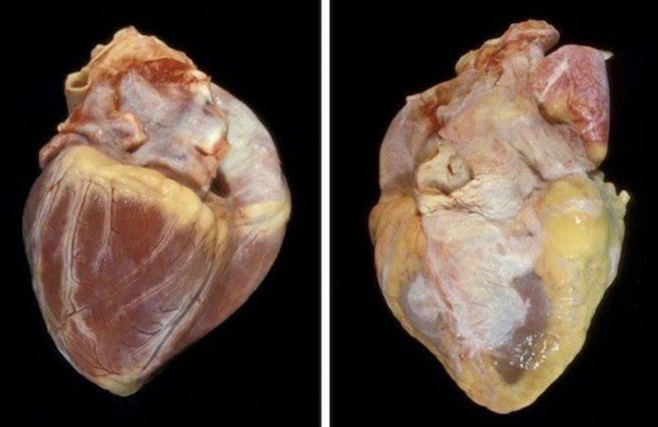
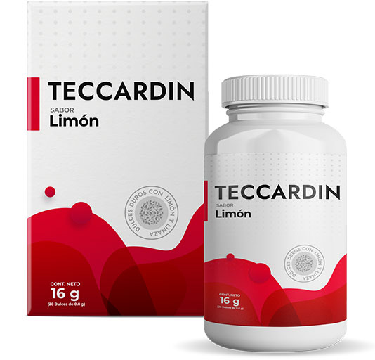

La Hipertensión no es una sentencia de muerte: cómo normalizar la presión de manera efectiva y sin consecuencias
Cada año, la hipertensión quita la vida a millones de personas. Las consecuencias del aumento de la presión arterial obligan a una persona a sobrevivir, a depender de los medicamentos. Este año, fue posible curar la hipertensión y prevenir sus complicaciones.
La hipertensión es una patología que va acompañada por un aumento persistente de la presión arterial por encima de 130/90. Hace parte de las enfermedades del sistema cardiovascular, que ocupan los primeros lugares en mortalidad no solo en personas de edad avanzada, sino también entre la clase trabajadora de ciudadanos que viven en grandes ciudades.
Cada año más jóvenes agrandan esta estadística. Son los más afectados por los factores de desarrollo de la hipertensión:
- Estrés, tensión psicoemocional, problemas en la vida sexual, insatisfacción con el nivel de vida y la apariencia.
- Herencia. En el 15% de los casos, la causa es la presencia de hipertensión arterial en familiares.
- El consumo excesivo de alimentos grasos y salados, lo que lleva a la obesidad y la patología renal, trombosis venosa, falla de los órganos internos.
- Tabaquismo, alcoholismo y uso de sustancias psicoactivas.
Corazón sano (izquierda) y corazón afectado por aterosclerosis como consecuencia de hipertensión (derecha)
La hipertensión es una enfermedad progresiva y, desafortunadamente, es imposible curarla por completo. Pero no se puede ignorar y dejar empeorar, ya que implica fallas en el funcionamiento de los riñones y los órganos reproductivos, los sistemas nervioso y endocrino, los procesos de hematopoyesis. En etapas avanzadas provoca ataques de pánico, accidentes cerebrovasculares, ataques cardíacos, impotencia, pérdida de visión e incluso la muerte.
La enfermedad es difícil de diagnosticar: durante muchos años puede progresar sin manifestaciones visibles. Y solo cuando se inicia el proceso patológico, los órganos internos muestran fallas en su funcionamiento, aparecen los síntomas:
- mareos, dolores de cabeza, tinnitus;
- dolor en el pecho, dificultad para respirar;
- fatiga constante, disminución del rendimiento, sensación de falta sistemática de sueño;
- frecuencia cardíaca acelerada;
- trastornos de memoria;
- sudoración profusa;
- ataques de pulsaciones en la cabeza;
- escalofríos;
- hinchazón alrededor de los ojos;
- ataques de irritabilidad, ansiedad;
- "Moscas volantes" en los ojos
- entumecimiento e hinchazón de los dedos de los pies y las manos.
Si tiene al menos uno de estos síntomas, ya es una razón para comenzar el tratamiento de inmediato. No puede tomar medicamentos serios sin la supervisión de un médico. Pero puede ayudar al corazón y los vasos sanguíneos hoy, de forma segura e independiente.
No siempre los médicos están de acuerdo con la opinión sobre la efectividad de este u otro producto. Pero absolutamente todos están de acuerdo en que el magnesio y las vitaminas del grupo B desempeñan un papel indispensable en el correcto funcionamiento del sistema cardiovascular. El magnesio ayuda a oxigenar las células y es responsable del metabolismo energético del músculo cardíaco, mientras que las vitaminas B ayudan a descomponer el colesterol y contracción adecuada del músculo cardíaco.
Los científicos alemanes han confirmado en sus trabajos científicos que el consumo de ácidos grasos tiene un efecto beneficioso sobre el corazón. Ayudan a adelgazar la sangre y prevenir la formación de placas de colesterol y coágulos de sangre. La salud de las células tisulares es uno de los factores fundamentales para el funcionamiento del corazón. Una serie de experimentos ayudó a identificar una serie de productos que podrían ayudar con esto. El ajo ocupó el primer lugar en esta lista. Las pruebas han demostrado que sus componentes eliminan los signos de inflamación en el miocardio y previenen la muerte celular en los tejidos del corazón, tienen propiedades antioxidantes y antimicrobianas.
Los farmacólogos europeos de Novartis (novartis) han trabajado durante muchos años para mejorar la tecnología de Pablo Cabrera para la fermentación de vitaminas a partir de materias primas naturales. Incluso en ese entonces, se demostró que es imposible obtener el espectro completo de sustancias necesarias para el cuerpo a partir de alimentos no procesados simplemente consumiéndolos.
Cientos de miles de dólares se gastaron en investigaciones que duraron más de 10 años. Durante este tiempo fue posible deducir la fórmula ideal de la composición, que se convirtió en la base para la producción posterior. Incluye los componentes más efectivos para restaurar la presión arterial: magnesio, ajo, semillas de lino, vitaminas B.
Después de dos años, el centro cardiológico alemán en Berlín utilizó el trabajo de sus colegas para crear el medicamento .

15 mil personas en toda Europa participaron en las pruebas del producto. Los grupos de foco consistían en personas de diferentes edades y orígenes étnicos. En el 95% de los casos, los participantes notaron que su condición había mejorado después de 2 semanas del programa. El 80% confirmó que el efecto se mantiene a largo plazo.
Al principio, comenzó a usarse en clínicas privadas en Alemania, y luego en hogares de ancianos e incluso hospicios públicos. De acuerdo con los resultados del primer año, se obtuvieron excelentes resultados: el número de infartos disminuyó en un 20%, las crisis hipertensivas en un 40%. En el 90% de los casos en la etapa inicial de la hipertensión, el medicamento no permitió que la enfermedad progresara.
Ahora se produce en pequeños lotes y se adquiere solo directamente del fabricante. No se puede encontrar en droguerías o mercados. Eso cambiará pronto, y en un par de meses estará disponible en todas las tiendas minoristas. Desafortunadamente, junto con esto, su costo aumentará por unas cuantas veces. Hasta 29.06.2021 tiene tiempo para comprar con un descuento del 50%.
14 Comentarios:
Deja tu comentario
Es correcto lo que dicen sobre la influencia del estrés. Me mudé a una gran ciudad y comencé rápidamente a cansarme, me volví más irritable. Ando un poco nervioso y mi presión salta. Lo intentaré antes que empeore mi situación
Empecé a beber por consejo de mi médico, durante el embarazo. En el segundo trimestre, comenzaron los picos de presión. Especialmente en el transporte, casi me desmayo unas cuantas veces. Después de 5 días de tomarlo, me sentí mucho mejor ¡Sigo el curso y me siento re bien!
Los beneficios del ajo ya han sido probados por todos los científicos. Es útil no solo para el corazón, sino también para todo el cuerpo.
La hipertensión me apareció después de un accidente automovilístico. He probado muchas drogas. Obtuve algún efecto, otras resultaron ser dulces nada más. Pero con ninguna logré el resultado deseado en su totalidad. Probaré esta, algún día debe acabarse mi búsqueda.
Los alemanes son líderes en la calidad de los medicamentos. Se lo pedí a mis padres. Gracias por el artículo!
A veces tenía síntomas similares. No le prestaba mucha atención y no los asociaba uno con otro. Y parece que es hora de hacerme un examen……
En cambio yo no tengo tiempo de ir a hacerme los exámenes, pero ordenaré el curso. Definitivamente no me hará daño, sobre su beneficio, ya veremos
se volvió en mi salvación después del infarto. Además de los problemas cardíacos, tengo el estómago maluco. Prácticamente todos los medicamentos para la presión dieron una carga sobre el tracto gastrointestinal. Ahora el problema está resuelto, el resultado es muy satisfactorio.
¿y con colesterol elevado se puede tomar?
Se puede, yo lo consulté con mi médico. Ahora estoy a mitad del tratamiento, hasta ahora solo tengo una impresión positiva.
Como hipertensa con experiencia, estaba extremadamente sorprendida por el efecto. Antes del , probé un montón de diferentes suplementos dietéticos y tratamientos para mantener mi salud. Gasté mucha plata. ¡Y aquí el precio acá no asusta, y es conveniente pedirlo y realmente ayuda!
No puede ser que no haya ningún efecto secundario. ¡No existen los medicamentos inofensivos!
Bueno, sí solo tienes intolerancia a un componente específico. Y eso no es el producto, no tiene nada de químicos.
Lo ordené para probarlo, solo por su composición. Ya no tengo fe en los médicos. ¡Ellos mismos no saben lo que escriben, beban esto, beben aquello! Y solo llévales tu dinero.